제로웨이스트를 실천하는 방법으로는 여러 가지가 있습
니다. 이 중 가장 많이 알려진 '5R운동에는 어떤 것들이
있는지 알아봅시다.
REFUSE

쓰레기 거절하기
거절하기는 쓰레기를 줄이는 가장 쉬운 실천방법입니다.
명함, 빨대 등과 같이 무료로 나눠주는 것들을 거절
함으로써 쓰레기가 생기는 것을 막을 수 있습니다.
REDUCE

쓰레기 줄이기
꼭 필요한 물건만 사고 포장이 적은 제품을 선택하는 구
매 습관으로 쓰레기를 줄일 수 있습니다. 또한, 잘 사용
하지않는 물건을 다른 사람과 나누고, 장바구니와 텀블
러 활용으로 일회용 쓰레기를 줄이는 것도 REDUCE원
칙에 속합니다.
REUSE
쓰레기 재사용
재사용은 다시 쓸 수 있는 물건을 다시 사용하는 것을
의미합니다. 사용했던 일회용 플라스틱 용기를 다시 씻
어서 사용하거나 건전지를 충전해서 재사용하는 방법
도 있습니다. 가장 좋은 것은 물건을 구매할 때 재사용
이 가능한 물건을 사는 것입니다.
RECYCLE
쓰레기 재활용
기본 중의 기본! 재활용하기입니다. 쓰레기 종량제 봉투
속에 들어 있는 쓰레기의 약 70%는 재활용품으로 분리
배출할 수 있는 쓰레기입니다. 많은 양의 쓰레기가 재활
용이 될 수 있지만 소각, 매각되면서 돈과 에너지를 낭
비하고 있습니다. 생필품을 구매할 때 재활용 마크가 있
는 제품을 구매하세요!
ROT
쓰레기 썩히기
재활용을 할 수 없는 음식물의 경우, 음식물만 모아서
썩혀 비료나 사료로 만드는 것입니다. 음식물이 그냥 버
려지면 토양과 수자원의 오염원이 될 수 있기 때문에 썩
히는 과정이 필요합니다. 현재 우리가 할 수 있는 일 중
가장 쉬운 것은 음식물 쓰레기 자체를 줄이는 방법입니
다!
5R
WITH
US
5R 원칙과 함께 지구를 지켜요!
제로 웨이스트란 모든 제품이 재사용될 수 있도록 장려하
며, 폐기물을 방지하는 데 초점을 맞춘 원칙을 말한다. 즉,
쓰레기 배출량을 줄여 낭비가 ‘0’이 되도록 하는 것입니
다. 모두 제로웨이스트를 삶에 적용시켜 함께 지구보호
챌린지에 참여하세요.
-
SERVICES
- 제로웨이스트
- 5R원칙
- 보도자료
-
CONTACT
- Gyeonggi-do, galmaedong
- qordick12@gmail.com
- 010 - 9991 - 6471
-
CONTACT